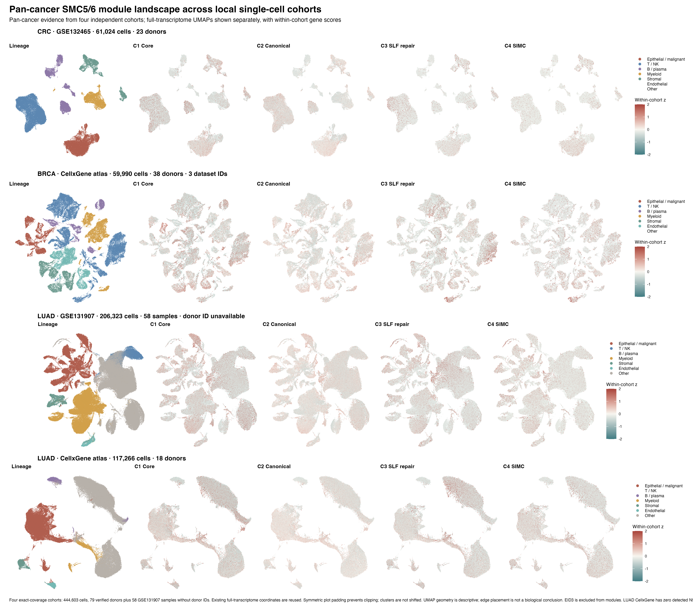
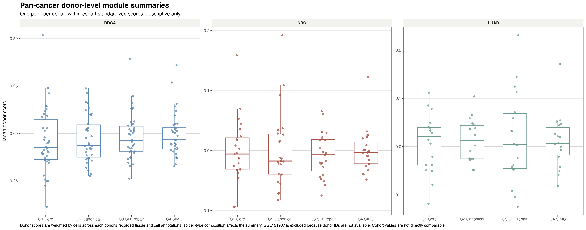
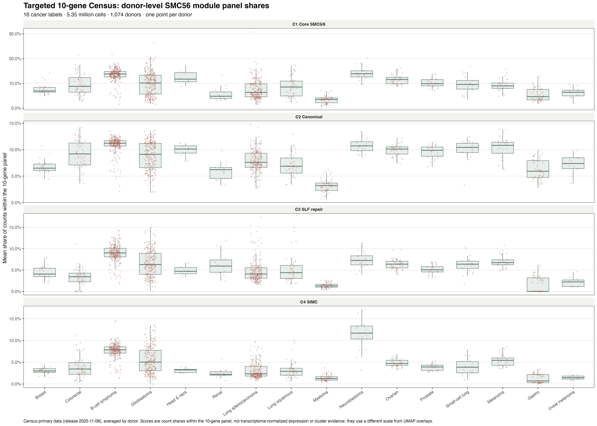

444,603全转录组细胞 · 4 个队列
3癌种：CRC、BRCA、LUAD
79 + 58可验证供体 + 无供体ID样本
5.35M16 癌种定向面板细胞，单独分析
如何读这张图：每行是一个独立队列，左侧为来源研究的全转录组 UMAP，右侧为同一队列内的 C1–C4 模块分数。不同队列的 UMAP 坐标不共享，颜色分数也在队列内标准化；因此图用于查看表达落在哪些细胞群，不能直接用坐标或分数高低比较癌种。大规模单一共享 UMAP会把癌种与队列批次混为一体，当前不作这种生物学解释。
01 · 全转录组 UMAP × 全部模块
4 个队列、每队列 5 个视图：主要细胞谱系与 4 个预定义 SMC5/6 复合体模块。点位使用各研究已验证的全转录组嵌入。

02 · 供体层面的模块分布
每个点对应一个有供体标识的供体；按队列分层展示，避免把数十万细胞当成独立重复。

03 · 16 癌种的定向面板
CELLxGENE Census 的 10 基因定向面板汇总约 535 万细胞。这里显示供体层面的面板内计数占比，不能与上方全转录组 z 分数放在同一量尺上，也不能提供 UMAP 分群。

04 · 有配对患者的 CRC 结果
GSE132465 中 10 位患者同时有肿瘤与正常组织。统计以患者为单位，不把细胞数当作重复。
上皮细胞：NSMCE1 上调信号
肿瘤减正常的平均差为 +0.350 个队列内 z 分数（中位数 +0.426）；10 位配对患者，Wilcoxon P=0.00195，14 项特征校正后 q=0.0273。
C1–C4 四个模块均未通过多重检验。当前结果支持一个有限的 NSMCE1 上皮信号，不支持整个复合体一致上调。细胞组成也发生变化
10 位配对患者中，肿瘤样本上皮细胞比例平均增加 13.2 个百分点、髓系增加 17.0 个百分点，B 细胞减少 23.1 个百分点；按 6 类校正后 q 分别为 0.0117、0.0059、0.0059。
这是细胞比例变化，不等同于组织内绝对细胞数量或细胞招募。05 · 队列构成与边界
BRCA · CELLxGENE
59,990 cells
38 位供体 · 3 个数据集
59,990 cells
38 位供体 · 3 个数据集
LUAD · CELLxGENE
117,266 cells
18 位供体
117,266 cells
18 位供体
当前能回答：SMC5/6 相关转录本和模块在不同肿瘤微环境细胞谱系中的分布；在有供体标识的队列中检查供体间变化。
当前不能回答：四癌共同的差异显著性或统一分群。公开全转录组队列目前覆盖三个癌种；原来 5,045 细胞四癌对象缺少供体/样本 ID 和可追溯 accession，因此不并入该证据集。LUAD 的 CellxGene 队列中 NSMCE3 未检出，C2 分数不完整。
当前不能回答：四癌共同的差异显著性或统一分群。公开全转录组队列目前覆盖三个癌种；原来 5,045 细胞四癌对象缺少供体/样本 ID 和可追溯 accession，因此不并入该证据集。LUAD 的 CellxGene 队列中 NSMCE3 未检出，C2 分数不完整。